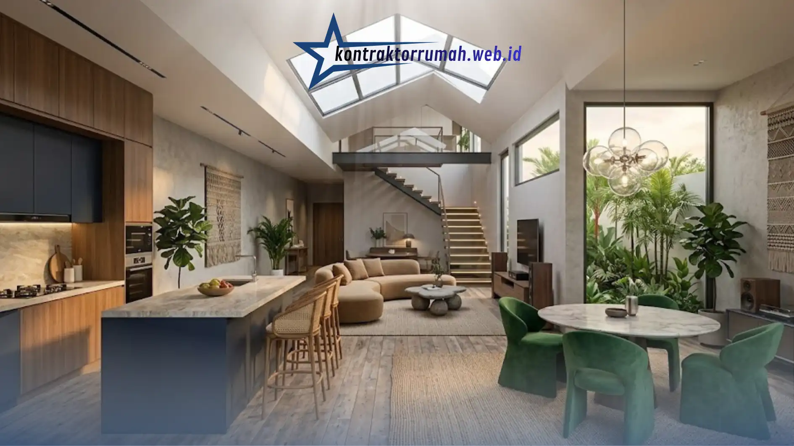

Rumah dengan luas tanah di bawah 90 m² kini menjadi mayoritas hunian baru di kawasan Jabodetabek, dan keterbatasan lahan inilah yang mendorong konsep open space menjadi solusi arsitektural paling relevan. Desain interior rumah modern tanpa sekat bukan sekadar tren estetika, melainkan jawaban teknis atas masalah sirkulasi udara, pencahayaan, dan efisiensi ruang gerak keluarga.
Poin Penting
- Konsep open space meningkatkan efisiensi ruang hingga 30% dibanding layout bersekat konvensional.
- Palet warna netral & terang jadi kunci menyatukan zona ruang tanpa dinding pembatas.
- Furniture multifungsi seperti island kitchen berperan ganda sebagai pembatas ruang implisit.
- Cross-ventilation wajib direncanakan sejak tahap desain struktur, bukan setelah bangunan jadi.
- Perencanaan layout perlu perhitungan teknis posisi kolom, pipa, dan instalasi listrik.
Mengapa Memilih Desain Interior Rumah Modern Konsep Open Space?
Konsep open space terbukti meningkatkan efisiensi ruang hingga 30% dibanding layout bersekat konvensional, karena satu area dapat menampung fungsi ruang keluarga, dapur, dan ruang makan sekaligus tanpa dinding pemisah. Tim arsitek Kontraktor Rumah dari kontraktorrumah.web.id secara rutin menerapkan pendekatan ini pada proyek desain interior minimalis di area Jabodetabek, khususnya untuk klien dengan lahan terbatas namun menginginkan kesan rumah yang lapang dan mewah.
Pendekatan tanpa sekat ini menuntut perencanaan matang, bukan sekadar membongkar dinding. Setiap elemen dari palet warna, pemilihan furniture, hingga jalur pencahayaan harus dirancang saling mendukung agar ruang tetap fungsional dan tidak terasa berantakan meski tanpa pembatas fisik.
Kunci Penting Penataan Desain Interior Rumah Modern Tanpa Sekat
Penataan ruang tanpa sekat memerlukan strategi berbeda dari desain konvensional. Berikut tiga kunci utama yang selalu diterapkan tim desainer interior berpengalaman dalam setiap proyek penataan ruang tanpa sekat.
1. Penyelarasan Palet Warna Terang dan Netral
Warna menjadi alat utama untuk menyatukan zona-zona fungsi tanpa dinding pembatas. Palet netral seperti putih gading, abu muda, dan krem dipilih karena memantulkan cahaya alami secara maksimal, sehingga ruang terasa lebih terang dan luas secara visual.
Untuk membedakan zona ruang keluarga, dapur, dan ruang makan, desainer biasanya menggunakan aksen warna gelap pada satu bidang saja — misalnya backsplash dapur atau dinding aksen di area duduk — sebagai penanda transisi ruang yang halus tanpa memutus kesatuan visual keseluruhan.
Konsistensi material lantai juga berperan penting. Penggunaan jenis lantai yang sama di seluruh area open space, misalnya keramik atau vinyl bermotif serupa, menghilangkan garis batas visual yang biasanya muncul akibat perbedaan material antar ruang.
2. Penggunaan Furniture Multifungsi (Smart Furniture)
Pada layout tanpa sekat, furniture berperan ganda: sebagai perabot sekaligus pembatas ruang implisit. Island kitchen, misalnya, secara alami memisahkan area dapur dari ruang makan tanpa memerlukan dinding fisik. Sofa modular dengan backrest rendah juga sering digunakan sebagai “sekat lunak” antara ruang keluarga dan ruang makan, karena tetap mempertahankan garis pandang terbuka.
Rak buku terbuka (open shelving) atau partisi kayu setinggi dada orang dewasa menjadi alternatif bagi keluarga yang tetap menginginkan sedikit privasi visual antara ruang keluarga dan dapur, tanpa kehilangan sirkulasi udara dan cahaya. Pendekatan ini kerap disebut sebagai kompromi ideal ketika klien ragu menerapkan konsep ruang keluarga dan dapur yang sepenuhnya terbuka.
3. Strategi Pencahayaan Alami & Void Plafon Tinggi
Void atau plafon tinggi pada area tengah rumah memungkinkan cahaya matahari menjangkau lebih dalam ke ruang open space, sekaligus mendorong sirkulasi udara panas naik dan keluar melalui ventilasi atas.
Kombinasi jendela besar di sisi depan dan belakang rumah dengan skylight pada void menciptakan pencahayaan merata sepanjang hari, mengurangi kebutuhan lampu di jam-jam produktif.

Island kitchen dan pencahayaan alami menjadi elemen kunci pada ruang dapur dan ruang makan konsep open space.
Catatan teknis dari tim ahli sipil Kontraktor Rumah: perancangan sirkulasi udara silang (cross-ventilation) — bukaan yang saling berhadapan pada dua sisi bangunan — adalah syarat mutlak rumah sehat berkonsep open space. Tanpa cross-ventilation yang terencana sejak tahap desain struktur, ruang tanpa sekat justru berisiko menjebak udara panas dan bau masakan di seluruh area rumah, alih-alih membuatnya lebih segar.
Matriks Perbandingan Desain Konvensional vs Konsep Open Space
Tabel berikut merangkum perbedaan mendasar antara layout bersekat konvensional dan konsep open space pada empat parameter utama yang paling sering menjadi pertimbangan klien.
| Parameter | Desain Konvensional (Bersekat) | Konsep Open Space |
|---|---|---|
| Luas Ruang | Terasa lebih sempit karena dinding memotong garis pandang | Terasa 20-30% lebih lapang meski luas bangunan sama |
| Sirkulasi Udara | Cenderung terhambat, memerlukan ventilasi per ruangan | Lebih optimal jika didukung cross-ventilation yang terencana |
| Fleksibilitas Fungsi | Terbatas, sulit diubah tanpa renovasi struktural | Tinggi, zona dapat disesuaikan dengan furniture dan aksen warna |
| Efisiensi Pencahayaan | Bergantung pada lampu buatan di tiap ruang tertutup | Cahaya alami menjangkau lebih banyak area sekaligus |
Estimasi Layout Ruang Keluarga Menyatu Dapur & Ruang Makan
Untuk lahan dengan lebar bangunan rata-rata 6-8 meter, alokasi ruang open space yang umum diterapkan adalah sebagai berikut: area ruang keluarga menempati sisi depan dekat jendela utama untuk memaksimalkan cahaya dan interaksi sosial, area dapur diposisikan di bagian belakang dekat area servis dan saluran pembuangan, sementara ruang makan berada di titik tengah sebagai penghubung kedua zona tersebut.
Island kitchen atau meja bar setinggi 90-110 cm sering ditempatkan sebagai pembatas fungsional antara dapur dan ruang makan, sekaligus berfungsi sebagai meja makan cepat saji sehari-hari. Jarak minimal 90 cm perlu disisakan sebagai jalur sirkulasi utama agar pergerakan antar zona tetap nyaman, terutama saat rumah dihuni oleh keluarga dengan anak kecil atau lansia.
Perencanaan layout seperti ini idealnya tidak dilakukan secara mandiri tanpa perhitungan teknis, karena posisi kolom struktur, jalur pipa, dan titik instalasi listrik turut menentukan kelayakan sebuah tata ruang open space.
FAQ Seputar Desain Interior Open Space
Konsep open space memberikan solusi nyata bagi keterbatasan lahan tanpa mengorbankan kesan mewah dan fungsi rumah. Namun keberhasilannya sangat bergantung pada perhitungan teknis yang matang — mulai dari palet warna, pemilihan furniture multifungsi, hingga perancangan sirkulasi udara silang yang benar sejak tahap desain struktur.